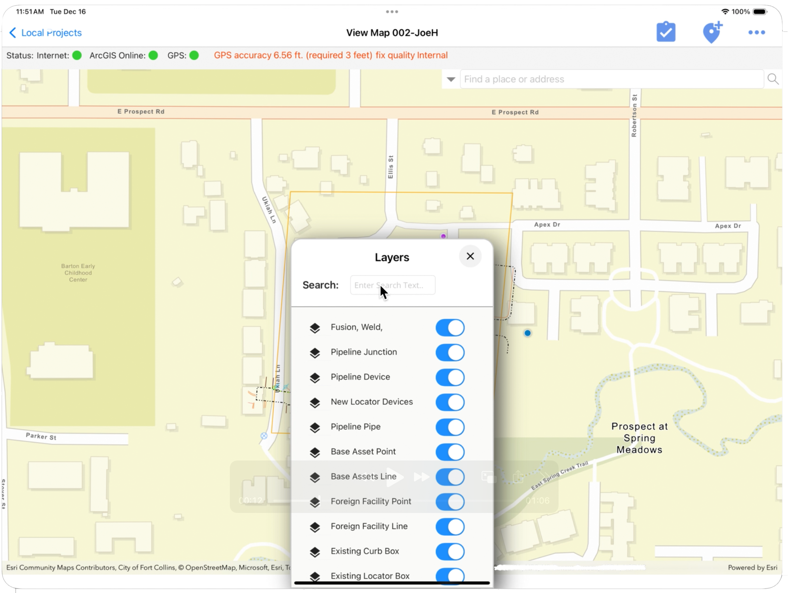

▲ .NET MAUI · Esri / GIS · Field


RamTech gMobile
An Esri/ArcGIS field-inspection platform that puts the map at the center — equipping crews to run damage assessments, leak surveys and gas-insight inspections from the field, fast.
Fewer clicks per feature
Load-time inits eliminated
Centralized mapping surface
Inspection workflows
